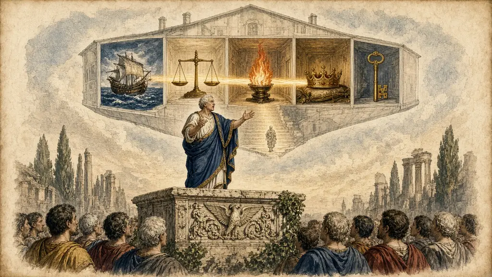

A Roman lawyer who could repeat a whole day's auction from memory, and a way to give a talk with a house instead of a script.

← A Pack of Cards · The whole course · Drawing Your Thinking →
Rome, about a hundred years before the birth of Christ. Quintus Hortensius Hortalus, a famous lawyer, was known for a memory that his friends found hard to believe. He could listen to a long argument in court, and then stand up and answer every point in turn, without a note.
According to the writer Seneca the Elder, who tells the story a century later, his friends once made a bet. Hortensius sat through a whole day at an auction, listening to the sales. In the evening he stood up and recited, in order, everything that had been sold, who bought it and for how much. The auctioneer's clerk checked the records. Hortensius did not make a single mistake.
To Hortensius and the men he competed with, this was not a party trick. A Roman orator had to speak for hours in public with no screen, no cards, and no microphone. The ancient teachers of public speaking, whose books we still have, divided their art into five parts, and memory was one of them.
The five were: finding what to say, putting it in order, choosing the words, keeping it in mind, and delivering it with voice and gesture. A speaker who forgot his place lost the case. So memory was taught as carefully as grammar.
Today we give talks with slides, and most of us still read from them, which is why so many talks are dull. A speaker who reads loses the audience. A speaker who looks up, who has the talk in their head and the audience in their eyes, is a different person.
This is exactly what the palace method makes possible. You do not memorise a script word for word. You memorise five or six pictures in five or six places, and the words come as you walk. The Romans did it that way, and you can too.
Say what you think each one means, then open it.
Hortensius's feat is reported by Seneca the Elder, Controversiae, preface to Book 1. The five parts of rhetoric are set out in Cicero and the Rhetorica ad Herennium. Told here in our own words.
The ancient teachers named five parts of rhetoric. The fourth one, memory, is the part you are learning here, and the other four tell you what to put in your palace.
| Canon | Meaning | Picture it as |
|---|---|---|
| Invention | Finding what to say | A lightbulb |
| Arrangement | Putting it in order | A row of boxes |
| Style | Choosing words | A paintbrush |
| Memory | Keeping it in mind | A treasure chest |
| Delivery | Voice and gesture | A trumpet |
Have a go before you open any answer. A rough attempt teaches you more than a perfect model you only read.
Say the answer first, then tap the card.
Learn the five canons in order, with a picture for each. A lightbulb, a row of boxes, a paintbrush, a treasure chest, a trumpet.
Place the five pictures in five places. Invention at the door, then onwards.
The list has gone. Type what you remember, one item per line.
These reach back to earlier rooms. Answer in your head or out loud, then check.
What is the next talk you have to give? How many points does it have, and what are your first two pictures?